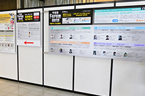
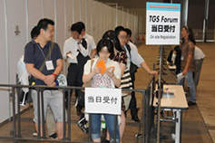

![Business Day 2014.9.18[Thu]-19[Fri] Public Day 2014.9.20[Sat]-21[Sun] @ Makuhari Messe](../../../en/common/images/pc_date.png)


※The picture shown here are from TGS2012&TGS2013. Please look at them for your reference.
To get to Makuhari Messe, it is convenient to walk (5 minutes) from the nearest JR Keiyo Line, Kaihin Makuhari station, or take a bus from JR Sobu Line, Makuhari Hongo station. On Business Days, there will be no staff to guide you to Makuhari Messe. So, please check how to walk from the station to Makuhari Messe by yourself.
Reception for entry admission to TGS2014 (2nd floor concourse, in front of Hall 2) will start from 8 a.m. After the staff checks your ID (web ticket attached to the confirmation e-mail of pre-registration completion, photo ID, business card), you will receive a business day visitor badge. Then, stand in the waiting line to go inside. Usually, if you line up at the reception before 9 a.m., you can enter TGS2014 soon after the doors open at 10 a.m. (This is only a guide and cannot be assured. So, if you have an appointment, allow enough time for your entry.)
In case you are coming to the venue by car, you can use the parking lot next to Makuhari Messe. This parking lot is open from 8a.m. to 11p.m. The cost is 1,000 JPY per day. Normally, you can park your car here. There is also a 24-hour opetating parking lot nearby（click here ）.
）.
It is not necessary to go through the entry reception counter of TGS to listen to the "Keynote". If you don't have the time to go through the entry reception counter, please come directly to the Keynote Reception Counter at "Event Stage in Hall 8".
If you have applied in advance, please show the copy of "web ticket" at the Keynote Reception Counter. You can also apply on that day by presenting your business card. However, priority is given to people who have applied in advance, so you may not be able to attend. Please be warned in advance.



It is not necessary to go through the entry reception counter of TGS to listen to the "TGS Forum Asia Game Business Summit" which will be held on the afternoon of September 18th(Thursday). If you don't have the time to go through the entry reception counter, please come directly to the Asia Game Business Summit Reception Counter at "Event Stage in Hall 8".
If you have applied in advance, please show the copy of "web ticket" at the reception counter. You can apply on that day by presenting your business card. However, priority is given to people who have applied in advance, so you may not be able to attend. Please be warned in advance.
It is not necessary to go through the entry reception counter of TGS to listen to the "TGS Forum Special Session" which will be held on the afternoon of September 19th(Friday). If you don't have the time to go through the entry reception counter, please come directly to the Special Session reception counter on the 2nd floor of the International Conference Hall. If you have applied in advance (fee of 8,000 JPY including Business Day Registration Form) , please bring web ticket attached to the confirmation e-mail of pre-registration completion.
You can apply on the day by presenting your business card (fee of 10,000 JPY including Business Day Registration Form.). However, priority is given to people who have applied in advance, so you may not be able to attend.
If you enter with TGS Forum Expert Session Ticket, you need the on-site registration. If you come on 18th, please come to Information counter at central entrance of Hall 5. If you come on 19th, please drop by TGS Forum reception desk on 2nd floor of International Conference Hall. "Business Days Registration Ticket" will be delivered to you.
There is no cloak at the venue. However, there are coin operated lockers in Makuhari Messe 2nd Floor Concourse . However, there is no guarantee that a locker will be available, so please be warned in advance.

2002-2014 CESA / Nikkei Business Publications, Inc. All rights reserved.